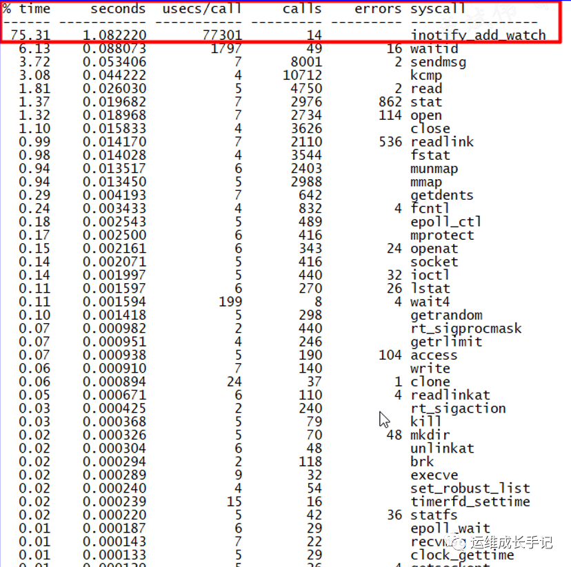

概述
- 本篇总结性能优化方向的案例和经验
系统级性能优化
系统级性能优化是指为了提高应用程序对操作系统资源与硬件资源的使用效率，或者为了提高操作系统对硬件资源的使用效率而进行的代码优化。
通过提高对操作系统资源与硬件资源的利用率，使得应用程序与基础软硬件平台具有更好的交互性，往往可以显著提升应用程序的执行速度和稳定性。
系统级性能优化 通常包括 2 个阶段，分别是性能剖析(performance profiling)和代码优化。
- 性能剖析阶段的目标是寻找性能瓶颈，查找引发性能问题的原因及热点代码。
- 代码优化阶段的目标是针对具体的性能问题而优化代码与编译选项，以改善软件性能。
Perf 工具概念
-
perf 是内置与 Linux 内核源码树中的性能剖析工具。基于事件采样原理，以性能事件为基础，支持针对处理器相关性能指标和操作系统相关性能指标的性能剖析。可用于性能瓶颈的查找与热点代码的定位。
-
系统级性能优化分为两个阶段：性能剖析和代码优化。
实践
其一 追踪某个进程在哪个系统调用上消耗时间最多
-
适用于已经怀疑某个进程是造成操作系统瓶颈的基础上
systemd 有超过 1 秒多的时间消耗在了 inotify_add_watch 的系统调用上。
strace -f -c -p 1 抓取10秒以后ctrl+c 退出

其二 生成火焰图
-
根据 perf 得到的数据生成 CPU 火焰图。
-
perf record -F 99 -p 1 -g -- sleep 30 -
- pid 表示需要采样的进程 id，如果是 Java 进程可以使用 jps 等命令获取进程 id，
-
- perf record 表示记录，-F 99 表示每秒 99 次，-g 表示记录调用栈，sleep 30 则是持续 30 秒
-
使用 perf script 工具对 perf.data 进行解析
perf script -i perf.data &> perf.unfold
- 需要用到一个国外大神 bredangregg 自己写的性能分析工具火焰图，项目地址：https://github.com/brendangregg/FlameGraph
./stackcollapse-perf.pl perf.unfold > perf.folded //生成折叠后的调用栈
./flamegraph.pl perf.folded > out.svg //生成火焰图
从火焰图上可以清晰地看出，CPU的主要耗时集中在__fsnotify_update_child_dentry_flags函数上。在最热点的函数里的调用链为inotify_add_watch->fsnotify_add_mark_locked->fsnotify-recalc_mast->__fsnotify_update_child_dentry_flags。最终指向了函数__fsnotify_update_child_dentry_flags
其三 关于 negative dentry
- 如果一个 dentry 没有对应的 inode，那它就是 negative 的。
其四
perf top ‐p $pid- 该命令利用默认的性能事件”cycles”对[code1]进行热点分析。”cycles”是处理器周期事件。这条命令能够分析出消耗处理器周期最多的代码，在处理器频率稳定的前提下，我们可以认为 perf 给出热点代码的就是消耗时间最多的代码段。
二 Linux通用内核参数优化
- 系统调优涵盖了多个层面，包括文件系统优化、网络性能提升、内存管理改进、CPU 调度优化以及磁盘 I/O 性能增强等。通过合理地调整这些参数，可以显著提高系统的响应速度、吞吐量，降低资源消耗，从而提升整体的运行效率。
1 网络相关内核参数
-
1.1 网卡RingBuffer适当调大
-
1.2 手工绑定中断到多核CPU，避免CPU0的性能瓶颈,提升系统整体性能
-
1.3 开启
net.ipv4.tcp_syncookies=1，防范少量的tcp syn攻击. -
1.4 增加网络缓冲区大小
-
- 在高并发网络访问场景下，默认的网络缓冲区大小可能会导致数据包丢失或延迟增加。通过调整net.core.rmem_max和net.core.wmem_max参数，可以增加系统套接字接收和发送缓冲区的大小。
sysctl -w net.core.rmem_max=16777216
sysctl -w net.core.wmem_max=16777216
-
- 上述命令将接收和发送缓冲区的最大值都设置为 16MB。这对于处理大量网络数据的服务器，如 Web 服务器、文件服务器等，能够有效提高数据传输的稳定性和效率。
-
1.5 TCP全连接队列长度
-
net.core.somaxconn参数决定了服务器在监听新连接时，未完成三次握手的连接请求队列的最大长度。在高并发连接场景下，如果该值过小，可能会导致新的连接请求被拒绝。
sysctl -w net.core.somaxconn=4096
-
- 将该值设置为 4096，可以使服务器能够处理更多的并发连接请求，避免因连接队列溢出而丢失连接。
-
1.6 优化 TCP 拥塞控制算法
-
- Linux 系统支持多种 TCP 拥塞控制算法，如reno、cubic等。cubic算法在高带宽、长延迟网络环境下表现较为出色。通过修改net.ipv4.tcp_congestion_control参数，可以选择更适合当前网络环境的拥塞控制算法。
sysctl -w net.ipv4.tcp_congestion_control=cubic
-
1.7 减少 TIME_WAIT 状态连接数量
-
在 TCP 连接关闭时，会进入 TIME_WAIT 状态以确保最后一个 ACK 数据包被对方接收。过多的 TIME_WAIT 状态连接会占用系统资源，影响新连接的建立。通过启用
net.ipv4.tcp_tw_reuse和net.ipv4.tcp_tw_recycle参数，可以加快 TIME_WAIT 状态连接的回收。
sysctl -w net.ipv4.tcp_tw_reuse=1
sysctl -w net.ipv4.tcp_tw_recycle=1
不过需要注意的是，tcp_tw_recycle参数在 NAT 网络环境下可能会导致丢包问题，在这种情况下应谨慎使用。 4.12版本之后的内核已经去掉了tcp_tw_recycle参数
-
1.8 优化nf_conntrack相关参数，支持高并发场景
-
- 根据机器内存大小，合理设置nf_conntrack_max 和 hashsize
-
- 超大连接数场景,直接把一些特定端口的连接，直接不追踪.
-
- 参考第三章第五篇
-
1.9 网卡层面开启GSO和GRO
-
- 可以降低CPU消耗
-
- 参考第三章第六篇
-
1.10 tcp_keepalive相关参数优化
-
- 参考第三章第六篇
-
1.11 优化 local_port_range 设置，支持主动大并发对外连接
-
- 调整net.ipv4.ip_local_port_range参数，增加本地端口的使用范围，以满足大量并发连接的需求。
sysctl -w net.ipv4.ip_local_port_range="1024 65535"
上述命令将本地端口的使用范围设置为 1024 到 65535。
2 内存
-
2.1 调整 swappiness 参数
-
vm.swappiness参数控制着系统将内存数据交换到磁盘交换分区（swap）的倾向程度，取值范围是 0 - 100。数值越高，表示系统越倾向于使用交换分区。对于内存资源较为充足的服务器，应尽量减少对交换分区的使用，以提高系统性能。
sysctl -w vm.swappiness=10
-
- 将swappiness设置为 10，意味着系统在内存使用率较高时，才会相对较少地使用交换分区，更多地依赖物理内存。
-
2.2 调整 dirty_ratio 和 dirty_background_ratio
-
vm.dirty_ratio参数表示当系统内存中脏数据（已修改但尚未写入磁盘的数据）达到系统内存总量的一定百分比时，系统开始将脏数据同步到磁盘。vm.dirty_background_ratio则表示当系统内存中脏数据达到系统内存总量的一定百分比时，后台线程开始将脏数据同步到磁盘。
sysctl -w vm.dirty_ratio=15
sysctl -w vm.dirty_background_ratio=5
-
- 适当降低这两个参数的值，可以减少磁盘 I/O 压力，避免因大量脏数据同步而导致系统性能下降。
-
2.3 启用透明大页
-
- 减少页表数目，提升效率
$ cat /sys/kernel/mm/transparent_hugepage/enabled
[always] madvise never
-
- [always] 表示已经开启
-
- [never] 表示透明大页禁用
-
- [madvise] 表示只在MADV_HUGEPAGE标志的VMA中使用THP
-
2.4 启用KSM
-
- 开启ksmd内核线程，合并底层物理页，降低使用量
-
2.5 调整 overcommit_memory 参数
-
vm.overcommit_memory参数控制着系统的内存分配策略，取值有 0、1、2。当取值为 0 时，系统会对内存分配进行保守估计，只有在确定有足够物理内存时才会分配内存；取值为 1 时，系统会允许超量分配内存，这在一些应用场景下可以提高内存的使用效率，但可能会导致系统在内存不足时出现 OOM（Out Of Memory）错误；取值为 2 时，系统会根据交换空间的大小来限制内存分配。
sysctl -w vm.overcommit_memory=1
-
- 对于一些内存使用需求波动较大，但对内存分配及时性要求较高的应用场景，可以将overcommit_memory设置为 1，但需要密切关注系统的内存使用情况，避免出现 OOM 错误导致系统不稳定。
-
2.6 优化内存分配算法
-
- Linux 系统的内存分配算法主要有伙伴系统（Buddy System）和 slab 分配器。在一些特定的应用场景下，可以通过调整相关参数来优化内存分配算法的性能。例如，对于一些频繁分配和释放小块内存的应用，可以通过调整 slab 分配器的缓存大小来提高内存分配效率。
# 调整slab分配器的缓存大小
echo "1024" > /sys/kernel/mm/slab/ kmem_cache_name/slab_size
-
- 其中kmem_cache_name是具体的缓存名称，不同的缓存名称对应不同类型的内存对象分配。具体的调整值需要根据应用的内存使用模式和性能测试结果来确定。
3 文件系统
-
3.1 进程打开的文件数上限
-
- 内核参数:
fs.file-max,fs.nr_open; 系统配置文件:/etc/security/limits.conf
- 内核参数:
-
3.2 为不同应用场景选择不同文件系统
-
- XFS适用于大文件场景、并且不适合作为/目录、支持不停服扩容. EXT4适合小文件场景, 需要停服扩容.
-
3.3 具体到某个文件系统优化挂载参数
-
- 除了noatime选项外，还可以根据实际需求调整其他挂载参数。例如，对于一些对数据一致性要求较高的应用场景，可以使用data=journal选项来确保文件系统在写入数据时先将数据写入日志，然后再写入数据块，从而提高数据的安全性，但这可能会稍微降低一些性能。
/dev/sda1 / ext4 defaults,noatime,data=journal 0 0
对于一些对性能要求极高且对数据一致性风险有一定承受能力的场景，可以考虑使用data=writeback选项，它可以提高写入性能，但可能会在系统崩溃等极端情况下存在一定的数据丢失风险。
/dev/sda1 / ext4 defaults,noatime,data=writeback 0 0
4 硬盘IO
- 4.1 零拷贝
-
- 根据业务场景，灵活运用sendfile、mmap、Direct IO 三种零拷贝技术. 参考第五章第三篇
-
4.2 块IO层优化
-
- Generic Block Device Layer: 在CFQ前提下，为不同优先级进程选择不同IO classes, 常用的 IO classess 包括: Idle、Best-effort、Realtime.
-
- 电梯层： 选择合适的调度算法： Deadline，CFQ，NOOP
-
- 适当加大 request queue 的长度
-
-
- /sys/block/sda/queue/nr_requests (块层最大可以申请的 request 数量)
-
-
-
- /sys/block/sda/queue/read_ahead_kb (预读最大的数据量)
-
-
4.3 物理设备
-
- 开启Raid卡缓存
5 网卡数据链路层
- 5.1 启用巨帧（Jumbo Frames）
-
- 巨帧是指超过标准以太网帧大小（1500 字节）的网络帧。在一些局域网环境中，启用巨帧可以减少网络传输中的帧头开销，提高网络传输效率。首先需要确保网络设备（如网卡、交换机）都支持巨帧功能。然后，在 Linux 系统中，可以通过以下命令启用巨帧：
ifconfig eth0 mtu 9000
上述命令将eth0网络接口的最大传输单元（MTU）设置为 9000 字节。需要注意的是，MTU 值的设置需要根据网络环境中的最小 MTU 值来确定，以避免出现网络分片问题。
- 5.2 调整网络接口速率和双工模式 使用ethtool工具可以查看和调整网络接口的速率、双工模式等参数。确保网络接口工作在最佳的速率和双工模式下，可以避免因网络接口参数不匹配而导致的性能下降。
# 查看网络接口当前的速率和双工模式
sudo ethtool eth0
# 设置网络接口的速率为1000Mbps，双工模式为全双工
sudo ethtool -s eth0 speed 1000 duplex full
6 网络服务优化
6.1 优化 DNS 解析 DNS 解析的速度会影响网络应用的访问速度。可以通过安装并启用nscd服务来缓存 DNS 查询结果，加快 DNS 解析速度。
# 安装nscd服务
sudo apt-get install nscd
# 启动nscd服务
sudo systemctl start nscd
# 设置nscd服务开机自启
sudo systemctl enable nscd
此外，还可以通过修改/etc/resolv.conf文件，选择更可靠、速度更快的 DNS 服务器。例如，可以使用公共 DNS 服务器，如 Google 的 DNS 服务器（8.8.8.8 和 8.8.4.4）或 Cloudflare 的 DNS 服务器（1.1.1.1 和 1.0.0.1）。
nameserver 8.8.8.8
nameserver 8.8.4.4